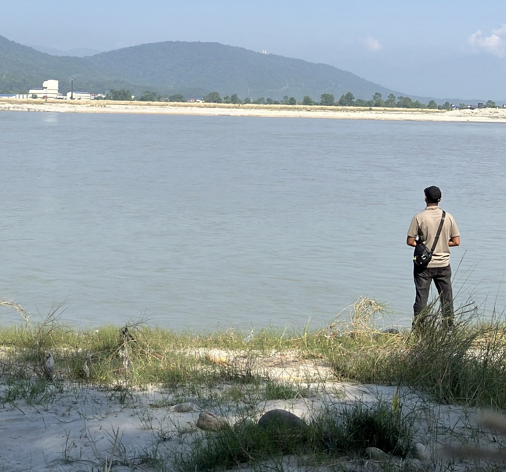

Physics
Cosmology, rogue planets, entropy, relativity, quantum weirdness. The universe is already insane without adding mythology on top.
Kathmandu University / Geomatics Engineering
I’m Prayatna Sapkota, a bachelor’s student in Geomatics Engineering at Kathmandu University. I’m interested in physics, space, technology, consciousness, uncertainty, and the strange reality of being alive in a universe that offers no easy explanations.

01 / Orientation
I’m studying for a bachelor’s degree in Geomatics Engineering at Kathmandu University. The field gives me one way to look at the world: through place, measurement, and the details that make a landscape legible. My curiosity also reaches toward physics, space, intelligence, and whether humanity is actually progressing or just getting better at distraction.
Physics pulled me in because it doesn’t care about feelings, status, or beliefs. Reality is what it is.
Cosmology, rogue planets, entropy, relativity, quantum weirdness. The universe is already insane without adding mythology on top.
Curiosity matters more than pretending to be smart. Most people defend beliefs. I’d rather investigate ideas.
02 / Independent research · 2026
A question can be
a place to begin.
I published a conceptual astrobiology hypothesis exploring whether dormant microorganisms could potentially survive interstellar travel aboard rogue planets and later reactivate under favorable conditions in another star system.
It’s not a claim of proof. It’s a structured framework combining microbial dormancy, planetary ejection, and long-duration interstellar drift.
Read research paper ↗PRAYATNA SAPKOTA — INDEPENDENT RESEARCHER
03 / From the notebook
Grade 12 is finished. Now the real journey begins.
Open note ↗April 5, 2026Last 3 months I didn’t post here. But I wasn’t doing nothing.
Open note ↗April 5, 2026I kept waiting to feel ready. Then I decided to start anyway.
Open note ↗04 / Correspondence
If you like physics, strange ideas, existential conversations, or just questioning reality in general. Feel free to reach out.